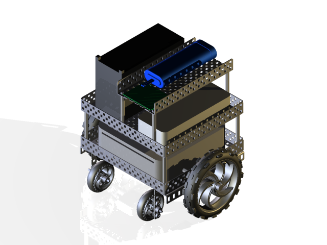

Personal Projects
Raspberry Pi-based, small scale, self-driving car.
DIY Autonomous Car
2019
As a final project for Georgia Tech's CS 7633, Human-Robot Interaction, I built a bass guitar-playing robot.
BassBot
2016
This is an Arduino shield I've designed for making it easier to interface with VEX electronics (servos, sensors, etc.) from an Arduino microcontroller.
VEX Shield for Arduino
2014
This project is from my internship at GTRI ELSYS in 2012. The project uses a kinect to autonomously map and navigate its environment.
Seekur Jr.
2012

One of my early experiments in computer vision, this rover uses a webcam and on-board computer to chase balls and avoid crashes.
Spot
2010
This project was my first substantial robotics project. It was a rather bulky and slow rover controlled via Skype. I entered into the GaETC tech fair in 2008, where it went on to win first in state.
ChatRover 9000
2008